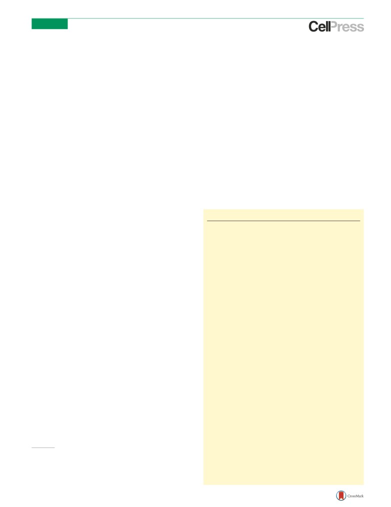
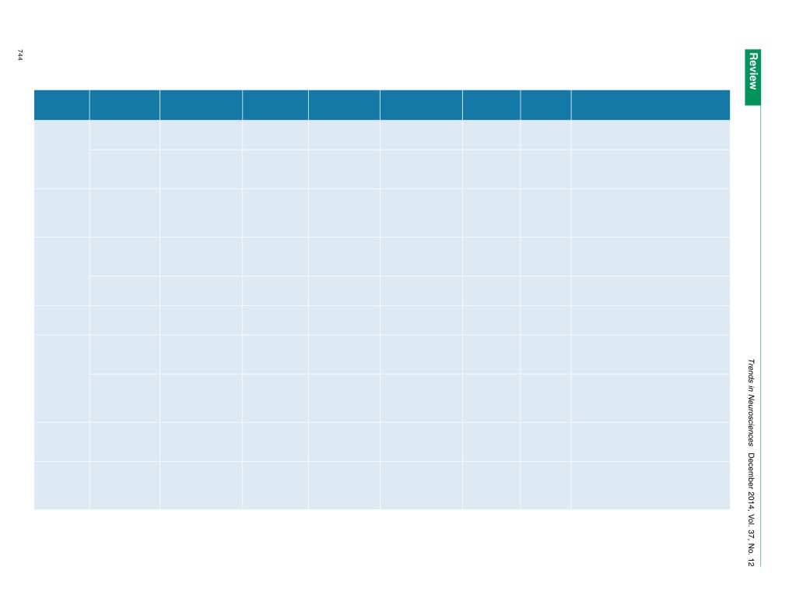
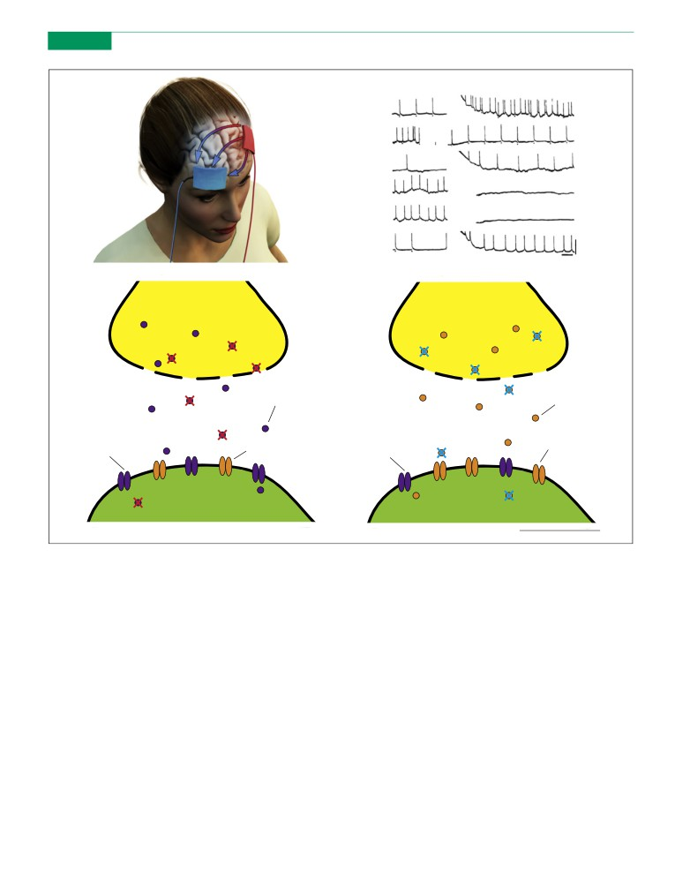
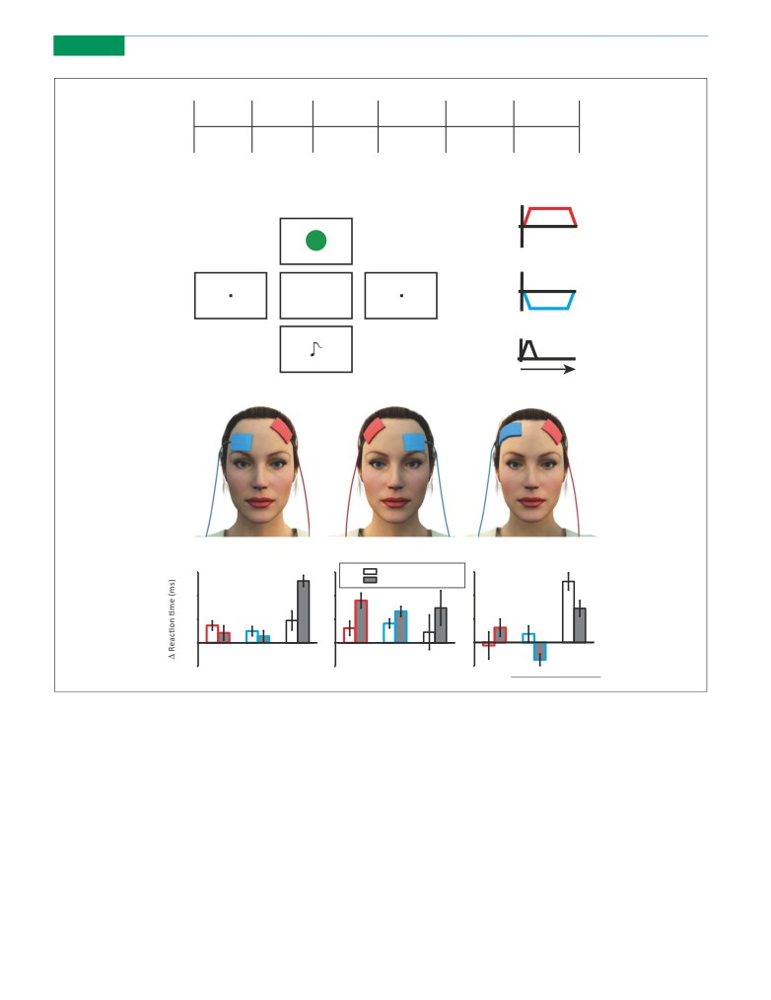

Review
Applications of transcranial direct
current stimulation for understanding
brain function
Hannah L. Filmer1, Paul E. Dux1, and Jason B. Mattingley1,2
1 School of Psychology, The University of Queensland, St Lucia, QLD 4072, Australia
2 Queensland Brain Institute, The University of Queensland, St Lucia QLD 4072 Australia
In recent years there has been an exponential rise in the
made with tDCS in the fields of neural connectivity [16],
number of studies employing transcranial direct current
neural oscillations [17], and cognitive training [18-20].
stimulation (tDCS) as a means of gaining a systems-level
These advances are generating mechanistic insights into
understanding of the cortical substrates underlying be-
the neural bases of behaviour.
haviour. These advances have allowed inferences to be
made regarding the neural operations that shape per-
ception, cognition, and action. Here we summarise how
tDCS works, and show how research using this tech-
Glossary
nique is expanding our understanding of the neural basis
of cognitive and motor training. We also explain how
Anode: an electrode with a positive charge.
Anodal tDCS: stimulation applied via the anode, typically associated with
oscillatory tDCS can elucidate the role of fluctuations in
increased cortical excitability and decreased levels of the neurotransmitter
neural activity, in both frequency and phase, in percep-
GABA.
tion, learning, and memory. Finally, we highlight some
Cathodal tDCS: stimulation applied via the cathode, typically associated with
decreased cortical excitability and decreased levels of the neurotransmitter
key methodological issues for tDCS and suggest how
glutamate.
these can be addressed.
Cathode: an electrode with a negative charge.
Electroencephalography (EEG): measurement of electrical activity on the scalp,
typically via multiple electrodes. Neural activity is reflected by small changes in
Introduction to the use of tDCS in neuroscience
electrical potential.
tDCS (see Glossary) offers a non-invasive means by which
Magnetic resonance spectroscopy (MRS): type of magnetic resonance imaging
to establish causal relationships between circumscribed
that allows the non-invasive measurement of metabolites (including neuro-
transmitters). MRS provides the concentrations of detectable metabolites in
regions of the brain and their underlying perceptual, cog-
the measured area of the brain.
nitive, and motor functions (Box 1). To date, tDCS has been
Motor evoked potentials (MEPs): activity in a muscle induced, in this context,
used to alter performance across a range of cognitive tasks
by a TMS pulse applied to the primary motor cortex. MEPs are measured via
electrodes placed on the skin over the targeted muscle, and are used as a
[1,2] (Table 1), and has been trialled as a treatment for a
measure of cortico-spinal excitability.
variety of psychiatric and neurological conditions [3,4],
Offline stimulation: stimulation applied at rest, before or after a task is
including depression [3,5], stroke [4], and altered states
undertaken.
Online stimulation: stimulation applied while a participant undertakes a task.
of consciousness [6]. Recently there has been debate in the
Oscillatory transcranial direct current stimulation (oscillatory tDCS): a form of
popular media over the use of tDCS to enhance perfor-
tDCS in which the current oscillates at a given frequency.
Plasticity: changes in structural or functional pathways in the brain in response
mance and augment gains from cognitive training [7-12].
to experience.
We argue that tDCS is more than a tool for cognitive
Reference electrode: for a single target region in the brain, the second
enhancement/treatment. Recent developments in our un-
electrode is referred to as the reference. This electrode can be placed over a
non-brain region (e.g., the cheek or mastoid) or a brain area thought not to be
derstanding of the neural basis of tDCS [5,13-15] have
involved in the relevant process(es). The reference electrode is sometimes
allowed researchers to make inferences regarding the
referred to as the ‘return’ electrode.
neural processes underlying specific behaviours, including
Region of interest (ROI): an area of the cortex targeted with tDCS.
Resting state fMRI
(rsfMRI): measurement of the blood oxygen level-
those tied to learning, memory, perception, and motor
dependent (BOLD) signal while a participant is at rest. rsfMRI allows analysis
actions.
of brain activity and networks in the absence of any specific task.
In this review, we provide a summary of the neurobio-
Sham stimulation: a form of stimulation in which the current duration or
intensity are substantially smaller than in active stimulation. Sham stimulation
logical effects of tDCS, highlighting polarity-specific mod-
can be thought of as a placebo condition.
ulations of neural excitability and synaptic processes. We
Transcranial direct current stimulation (tDCS): non-invasive electrical stimula-
discuss some of the important advances that
have been
tion of the brain via electrodes place on the scalp. Typically, a current is
ramped up, held constant for a period of time (most commonly 8-15 min), and
then ramped down.
Corresponding author: Filmer, H.L.
Transcranial magnetic stimulation (TMS): non-invasive brain stimulation using
Keywords: tDCS; neural oscillations; training; memory; prefrontal cortex; neural
a magnetic field to induce an electric current in underlying brain tissue.
processes.
TMS evoked potentials: a change in electric potentials measured with EEG in
response to a TMS pulse.
0166-2236/
Visual evoked potentials (VEPs): a change in electric potentials measured with
2014 Elsevier Ltd. All rights
EEG in response to a visual stimulus or a TMS pulse over
visual cortex.
742
Trends in Neurosciences, December 2014, Vol. 37, No. 12
Review
Trends
in Neurosciences December 2014, Vol. 37, No. 12
Box 1. Types and uses of transcranial electrical stimulation
There are several types of transcranial electrical stimulation (tES). All
peripheral sensations (scalp tingling); it produces fewer physiological
typically involve the application of a current via two electrodes, where
artefacts than TMS (e.g., muscle twitches and auditory noise); and it is
one or both electrodes are placed on the scalp. The most widely used
cheaper, more portable, and easier to apply than TMS. Many of these
method of tES is transcranial direct current stimulation (tDCS), where
advantages have led to the increased use of tDCS in clinical and
a constant current is passed from one electrode (the anode) to the
research settings. In particular, the ability of tDCS to provide polarity-
other
(the cathode) over a period of time
(usually
8-15 min).
specific modulations (without causing action potentials) has provided
Stimulation typically leads to polarity-specific modulations in cortical
a unique perspective on the relationship between brain and
excitability, and in neurotransmitter and neuromodulator systems in
behaviour.
the stimulated cortex (see ‘Neurobiological effects of tDCS’). tDCS has
Two other types of tES are oscillatory tDCS and transcranial
been used to examine the neural processes underlying a range of
alternating current stimulation (tACS). Both oscillatory tDCS and tACS
psychological processes, including working memory, language,
involve the application of a current in which intensity fluctuates at a
mathematical cognition, spatial attention, and response selection
given frequency. For oscillatory tDCS, these fluctuations remain
(Table 1). Recently, tDCS has been shown to modulate high-level
polarity specific at each electrode. For tACS the current oscillates such
processes such as social norm compliance [115]. Clinical applications
that each electrode does not remain polarity-specific [116]. Both tACS
for several conditions exist, with evidence tDCS can aid the treatment
and oscillatory tDCS allow the specific modulation of neural
of stroke [4], depression [3,5], and minimally conscious states [6].
oscillations, giving causal insights into neural communication.
Unlike correlational methods such as functional magnetic reso-
A final type of tES is transcranial random noise stimulation (tRNS).
nance imaging (fMRI) (where the BOLD signal is the dependent
tRNS involves random fluctuations in current intensity, essentially
variable), tDCS can provide causal evidence that a brain region is
adding neural ‘noise’ to the targeted region(s). This stimulation type
involved in a behaviour of interest. tDCS offers a perspective that is
has provided promise in the field of cognitive enhancement [117,118]
unique with respect to other brain stimulation methods, such as
and as a clinical treatment [119]. The idea of adding neural noise to a
transcranial magnetic stimulation (TMS). For example, tDCS influ-
system, and finding resulting improvement, may seem counter-
ences a larger region of the cortex than TMS; it acts as a neural
intuitive. However, the enhancement of a signal through the addition
modulator without causing action potentials; it can produce opposing
of noise can be explained via stochastic resonance [120], whereby a
effects through anodal and cathodal stimulation, but with
similar
weak signal is boosted by an increase in background
noise [120].
Neurobiological effects of tDCS
changes across the brain (see ‘Using tDCS to examine
Excitability changes induced by tDCS
connectivity and network communications’).
Animal studies have shown that anodal stimulation ap-
plied directly to the cortex causes the resting membrane
Factors influencing tDCS-induced excitability changes
potential to become more positive, whereas cathodal stim-
tDCS effects on excitability can be modulated by several
ulation causes hyperpolarisation [21,22]. If stimulation is
factors. First, the intensity of stimulation affects excitabil-
of sufficient duration, these effects are comparable during
ity. Whereas low-intensity (1 mA) stimulation causes con-
and immediately after application [21,22]. Conceptually,
ventional polarity-specific modulation of neural
one can think of the effects of depolarisation and hyperpo-
excitability, higher-intensity (2 mA) stimulation can lead
larisation caused by anodal and cathodal tDCS as modula-
to increased excitability from both stimulation polarities
tions that make it more or less likely, respectively, that a
[36]. Second, pairing a task with stimulation can modulate
stimulated neuron will produce an action potential.
motor cortex excitability [37] relative to stimulation deliv-
When tDCS is applied to the primary motor cortex in
ered at rest. For example, a cognitive task can reverse the
humans, anodal stimulation causes increased neural ex-
typical relationship between polarity of current flow and
citability, whereas cathodal stimulation results in de-
excitability, whereas a motor task can reduce excitability
creased excitability
(Figure
1), as reflected in motor
following both anodal and cathodal stimulation [38]. Third,
evoked potentials (MEPs) [23-26] and transcranial mag-
the reliability of the induced excitability changes can vary
netic stimulation (TMS) evoked potentials [26]. Compara-
both from session to session within individuals, and across
ble modulations by anodal and cathodal tDCS have been
participants [37]. Some variability is undoubtedly due to
reported in the visual cortex, as measured by TMS-induced
differences in current flow between individuals (Box 2), in
phosphenes [27] and visual evoked potentials (VEPs) [28].
addition to potential differences in neurotransmitter effi-
These modulations are also reflected in changes in the
ciencies (see [5]).
blood oxygen level-dependent (BOLD) signal measured
Explanations for within-participant variability include
using fMRI [29-31]. Anodal stimulation tends to increase
individual modulating factors such as intake of neuro-
the BOLD signal, whereas cathodal stimulation decreases
affective substances (e.g., nicotine [39]), and fluctuations
it [32,33]. It is noteworthy, however, that some researchers
that occur over time. For example, time of day is known to
have found no change in BOLD within regions of targeted
influence motor cortex plasticity, as measured with TMS
cortex, either during a relevant task (e.g., motor move-
[40]. State-dependent variations in the effect of stimula-
ments following motor cortex stimulation) or at rest [34].
tion have been studied using the combined application of
Functionally connected regions distant from the electrode
tDCS and TMS. For example, TMS can be used repetitively
site can also be influenced by tDCS [15,33], including
(rTMS) to induce prolonged changes that cause increased
subcortical structures [16,33], and this modulation can
excitability (e.g., with 5 Hz stimulation [41]) or decreased
be in the same [35] or opposite [34] direction to that
excitability (e.g., with 1 Hz stimulation [42]). If the motor
predicted from the polarity of stimulation over the target
cortex is preconditioned with cathodal stimulation, how-
region. Together these findings reveal that the effects of
ever, a normally inhibitory rTMS protocol will increase
tDCS on brain function are complex, and that stimulation
excitability [43], and this interaction can modulate pain
over relatively focal areas of cortex can yield
widespread
thresholds in healthy participants
[44].
Similarly, for
743

Table 1. Summary of key papers reporting behavioural modulations through tDCSa
Ref.
Location and size
Location of
tDCS
Stimulation
tDCS protocol
Sample size
Findings
of target electrode(s)
reference
parameters
types
and design
electrode
Response
Filmer et al. [18]
Left pLPFC, 25 cm2
Right
0.7 mA for 9 min
Anodal, cathodal,
Offline
18,
Anodal and cathodal tDCS, compared with
selection
orbitofrontal
and sham
within
sham tDCS, impaired training related
participants
improvements in response selection
Filmer et al. [90]
Left pLPFC, 25 cm2
Right
0.7 mA for 9 min
Anodal, cathodal,
Offline
18,
Single task: anodal and cathodal tDCS
orbitofrontal
and sham
within
disrupted response selection training. Dual
participants
task: cathodal stimulation increased
response speed
Mathematical
Iuculano and
Bilateral PPC or
N/A
1 mA for 20 min
Active and sham
Online
19,
PPC tDCS, compared to sham tDCS,
learning
Kadosh [19]
DLPFC (anode left,
and offline
between
increased learning rate of novel symbolic
cathode right), 3 cm2
participants
‘numbers’, decreased the automatic
interference between novel numbers.
DLPFC tDCS led to the opposite pattern
Language
Meinzer et al.
Left TPJ, 35 cm2
Right
1 mA for 20 min
Anodal and sham
Online
40,
Five consecutive days of anodal tDCS,
learning
[20]
orbitofrontal
between
compared with sham, improved learning of
participants
novel words. Some benefit remained 1 week
later
Floel et al. [99]
Wernicke’s area,
Right
1 mA for 20 min
Anodal, cathodal,
Online
19,
Anodal tDCS, compared with cathodal and
35 cm2
orbitofrontal
and sham
and offline
within
sham tDCS, improved learning of novel
participants
words
Perception/
Clark et al. [88]
Right inferior frontal
Right
2 mA or 0.1 mA
Anodal, tDCS high
Online
27,
High, but not low, intensity tDCS improved
Detection
cortex
sphenoid bone
for 30 min
(2 mA) and low
and offline
between
accuracy at detecting concealed objects in a
(0.1 mA) intensity
participants
virtual reality task
Working
Martin et al. [121]
Left DLPFC, 35 cm2
Right deltoid
2 mA for 30 min
Active tDCS, sham
Online
54,
Stimulation over 10 consecutive weekdays
memory
muscle, 100 cm2
tDCS plus training,
between
improved working memory performance
active tDCS plus
participants
(dual-task n-back). No improvement without
training
concurrent tDCS
Sandrini et al.
Bilateral PPC, 35 cm2
N/A
1.5 mA for 13 min
Anode left or right
Offline
27,
Low working memory load: training
[103]
PPC, cathode
between
abolished with left anodal/right cathodal
opposite hemisphere
participants
tDCS. High working memory load: practice
sham
related improvements abolished with right
anodal/left cathodal tDCS
Motor skill
Reis et al. [91]
Left M1, 25 cm2
Right
1 mA for 20 min
Anodal and sham
Online
24,
Anodal (compared to cathodal and sham)
acquisition
orbitofrontal
and offline
between
tDCS increased the speed of motor skill
participants
acquisition. Benefits remained at 3 month
follow-up
Error
Harty et al. [122]
Left or right DLPFC
Cz (vertex)
1 mA for the
Anodal, cathodal,
Online
24, between
Anodal tDCS to the right DLPFC improved
awareness
duration
and sham
and within
error detection in healthy older adults.
of the task
participants
Anodal tDCS to the left DLPFC, or cathodal
or sham to the left DLPFC, had no effect on
error awareness
aKey studies that have demonstrated tDCS modulations of behaviour. We give examples from the domains of attention, language, working memory, mathematical learning, error awareness, and perception. The target electrode size
and placement, reference electrode location, stimulation features (parameters, types, and timing), participant sample size, design type, and key findings are given for each study.

Review
Trends
in Neurosciences December 2014, Vol. 37, No. 12
(A)
(B)
Depth: I.I.mm. (PT-cell)
Anodal
(A)
↓ ON
Anodal
(B)
↓ OFF
Anodal
(C)
↓ ON
Anodal
(D)
↓ OFF
Cathodal
(E)
↓ ON
Cathodal
50
(F)
↓ OFF
mV
100 msec
(C)
(D)
Presynap c neuron
Presynap c neuron
GABA
Glutamate
Glutamate receptors
Glutamate receptors
GABA receptors
GABA receptors
Postsynap c neuron
Postsynap c neuron
TRENDS in Neurosciences
Figure 1. The neurobiological effects of tDCS. (A) Illustration of a typical tDCS montage for targeting the prefrontal cortex. The anode (red; target electrode) is placed over
the prefrontal cortex (equivalent to F3 in the EEG 10-20 system) and the cathode (blue; reference electrode) over orbitofrontal cortex. The current flows from the anode to
the cathode, and modulates the cortex underneath and between the electrodes. This image is for illustrative purposes only and is not based on a mathematical model. (B)
Firing rates recorded from neural populations in cats. Anodal stimulation led to an elevated firing rate, and cathodal stimulation led to a decreased firing rate. Reproduced
from Purpura and McMurtry [22] with permission. (C) Simplified diagram showing a presynaptic and a postsynaptic GABAergic neuron. Anodal stimulation inhibits GABA.
inhibits glutamate.
(D) A simplified diagram showing a presynaptic and a postsynaptic glutamatergic neuron. Cathodal stimulation
visual cortex, the pairing of anodal tDCS and excitatory
Neurotransmitters and modulators
rTMS will reduce excitability [45]. In addition, the pairing
Animal models suggest that changes in excitability follow-
of cathodal tDCS and inhibitory rTMS causes an increase
ing direct cortical stimulation are likely due to changes in
in excitability in the visual cortex [45]. Such modulations of
the membrane potential of targeted neurons [21,22]. In
excitability via tDCS highlight the potential for stimula-
humans, drugs that block sodium channels (e.g., carba-
tion to interact with the prior state of the cortex, called
mazepine) or calcium channels (e.g., flunarizine) reduce or
‘homeostatic plasticity’ [43] or ‘metaplasticity’ [45].
eliminate the normal increase in cortical excitability eli-
Because the state of affected neurons prior to stimula-
cited by anodal stimulation [46]. By contrast, these same
tion can alter the effect of stimulation on cortical excitabil-
drugs have no effect on excitability changes associated
ity, it follows that modulation of excitability by tDCS might
with cathodal stimulation [46], presumably because cath-
itself be influenced by factors known to affect the state of
odal stimulation causes hyperpolarisation of affected neu-
the cortex (e.g., tasks, practice, fatigue). In this context,
rons and, consequently, inactivation of sodium and calcium
tDCS could be utilised to understand how such factors
channels [47]. Collectively, these findings suggest tDCS
affect the brain. Better understanding of these state-based
exerts its effects via modulation of neuronal membrane
interactions could be harnessed to optimise the magnitude,
potentials.
and direction, of cortical excitability modulations induced
Further evidence that tDCS modulates synaptic activity
via
tDCS.
via neurotransmitters has come from human
studies using
745
Review
Trends
in Neurosciences December 2014, Vol. 37, No. 12
and dopamine [55,56] systems. These modulations likely
Box 2. Modelling current flow
affect plasticity processes, making tDCS an important tool
Several mathematical models have been developed to describe the
path of current flow in cortical tissue induced by tDCS
for clinical treatment. A rich avenue for future research is
[14,106,107,109-111]. These models estimate the pathway based
how tDCS alters these systems, the consequences of such
on the electrical conductivity of the tissue that lies between the
modulations, and the link between neurotransmitters/
electrodes. Early approaches used simplified spherical head models
modulators and behaviour.
to calculate current flow [123], and estimated current distribution
based on these assumptions. Newer models have used MRI scans,
and have segmented the different tissue types (e.g., skin, skull, CSF,
Using tDCS to examine connectivity and network
grey matter, and white matter) [110]. After segmentation, separate
communication
conductivity values are given to each tissue type, producing a map
Functional networks
of conductivity for a realistic, 3D head model. Current distribution is
A popular approach for examining functional brain net-
then estimated from these different tissue types [14,110].
works involves measuring activity via fMRI while partici-
As a rule, the strongest current is induced at cortical locations that
are nearest the electrodes
[110]. Current density generally di-
pants are at rest [59]. Such ‘resting state’ scans (rsfMRI)
minishes with increasing distance from the electrodes [110], but
allow measurement of correlated activity across distinct
some effects of stimulation can be widespread across the brain [14].
brain regions from which hypotheses regarding functional
The precise flow of current may be modulated by individual
relationships between these areas can be tested. rsfMRI
differences in factors such as head size and shape, skull thickness,
studies have helped to delineate several large-scale brain
and ventricle size [14]. These individual differences may be further
exaggerated where there are abnormalities in the brain that could
networks. The default-mode network [60], includes inferior
alter conductivity, for example, following brain lesions [14]. Recent
parietal, medial temporal, and medial prefrontal cortices
advances have been made in applying models to individual
[61], and shows low-frequency oscillations (<0.1 Hz) that
participants’ anatomy [14]. Such subject-specific modelling is im-
are most active at rest. There is also substantial evidence
portant to fully understand and characterise the effects of stimulation
for networks that are important in cognitive control. These
[124]. This recent work on developing realistic head models will allow
researchers to determine the optimal placement of electrodes for each
include the fronto-parietal network [62] and the cingulo-
individual to maximise the efficacy
of stimulation.
opercular network [63].
Several studies have examined the influence of tDCS on
resting-state network activity. Anodal stimulation over the
left motor cortex increases functional connectivity between
magnetic resonance spectroscopy (MRS) [48,49], and from
the left motor cortex and the ipsilateral thalamus, caudate
drug studies targeting specific neurotransmitter receptors
nucleus, and parietal association cortex
[16], whereas
[50,51]. These studies have reported that anodal stimula-
cathodal stimulation decreases connectivity between the
tion inhibits neurotransmission by GABA [47,48,51,52] (a
left motor cortex and the contralateral putamen [16].
known inhibitory neurotransmitter [53]), whereas cathod-
Bilateral stimulation of motor cortex induces widespread
al stimulation inhibits neurotransmission by glutamate
changes in functional connectivity, in particular with the
[48,50,52]
(a known excitatory neurotransmitter
[54])
prefrontal cortex, and the primary and secondary motor
(Figure 1). Such modulations of synaptic processes suggest
cortices [64]. tDCS over prefrontal cortex induces altera-
that tDCS influences synaptic plasticity [47], and that
tions in both the default mode and fronto-parietal net-
GABA and glutamate play a role in the effects of tDCS
works [65]. Such tDCS-induced changes in the default-
on brain function.
mode network have led to the suggestion that increased
Several drug interventions have linked the neuromo-
connectivity results in diminished top-down control and
dulators serotonin and dopamine to tDCS after-effects
associated cognitive impairment [66].
[47,52,55-57]. Administration of L-dopa can reverse the
Combining tDCS and TMS allows the investigation of
typical increase in excitability due to anodal stimulation,
causal interactions between brain areas. For example,
and prolong the attenuation of excitability following cath-
preconditioning the supplementary motor area (SMA) re-
odal stimulation [55,56]. By contrast, a serotonin reuptake
gion with anodal stimulation reduces excitability in motor
inhibitor (citalopram) has been shown to reverse the in-
cortex, and increases excitability in somatosensory cortex,
hibitory effect of cathodal stimulation, and to enhance and
whereas cathodal tDCS leads to the opposite pattern [67].
prolong increased excitability following anodal stimulation
These findings suggest that the SMA region has an inhibi-
[57]. Further, genetic polymorphisms linked to serotonin
tory input to the motor cortex, and an excitatory input to
function (5-HTTLPR) predict tDCS treatment outcomes in
the somatosensory cortex [67]. In another study, Feurra
patients with major depressive disorders [5], suggesting an
et al. [68] stimulated the parietal cortex with tDCS and
effect of tDCS on the serotonergic system and highlighting
measured MEPs while participants imagined moving their
the importance of genetic factors in determining individual
fingers. Undertaking this motor imagery task enhanced
responses to tDCS. The cholinergic system may also con-
corticospinal excitability. The effect was larger following
tribute to tDCS effects. Acetylcholine inhibitors block the
ipsilateral anodal stimulation and smaller following ipsi-
influence of anodal stimulation and diminish that of cath-
lateral cathodal stimulation [68], relative to sham stimu-
odal stimulation [58]. Moreover, administration of nicotine
lation, suggesting that a parieto-motor circuit is involved
can abolish offline effects of stimulation, further suggest-
in motor imagery [68].
ing a link with the cholinergic system [39] and highlighting
Taken together, these findings suggest that tDCS can
a potential source of within-participant variability.
cause changes in functional networks across the brain.
To summarise, tDCS can alter GABA [47,48,51,52],
When paired with neuroimaging, tDCS can be a powerful
glutamate [48,50,52], acetylcholine [39], serotonin
[5,57],
tool for identifying and describing
functional brain
746
Review
Trends
in Neurosciences December 2014, Vol. 37, No. 12
networks [69]. When paired with TMS, tDCS allows iden-
discussion around the use of tDCS to increase gains
tification of interactions between brain regions. These are
associated with cognitive training, widely reported in
crucial advantages of tDCS given the growing consensus
the popular media [7-12]. It is important to note, howev-
that cognition and behaviour reflect the interaction of
er, that tDCS in healthy individuals can have a variety of
many regions acting in concert [70,71].
effects on cognition [2,87] (Box 3), including facilitation
for some tasks [1,19,20,88-92] and impairment for others
Modulating neural communication
[18,19,92-94]. By studying both facilitation and im-
Endogenous oscillations in neural activity provide an im-
pairment with tDCS we can elucidate the possible mech-
portant means of communication between distant sites
anisms underlying cognitive and motor training
across the brain [72]. For example, slow-wave oscillations
processes. In the following sections we discuss the use
between the neocortex and hippocampus during sleep are
of tDCS in cognitive and motor training, and consider its
thought to be important for long-term memory formation
potential to shed light on the neural basis of training
[73,74]. There is evidence that conventional anodal or
effects.
cathodal tDCS can cause changes in oscillatory cortical
activity in the theta [75,76], alpha [76], beta [75,77], and
Facilitating training
gamma [77] ranges. The precise mechanisms by which
Several studies have reported that tDCS can facilitate
these changes in oscillations occur remain unclear. How-
training-related performance improvements in simple mo-
ever, tDCS can also be used with an oscillatory change in
tor tasks [92,95,96]. Stagg and colleagues asked partici-
current density to directly manipulate the frequency of
pants to respond quickly and accurately to visual cues that
neural oscillations [17]. By electrically stimulating a region
were predictable, and led to training-related improve-
of cortex to adopt a particular frequency and phase of
ments in reaction times [92,95]. These gains were en-
oscillation, the roles of frequency and phase can be causally
hanced when online anodal stimulation was applied to
examined in relation to behaviour. For example, when
the primary motor cortex [92,95]. Although the mecha-
dorsolateral prefrontal cortex is stimulated during sleep
nisms responsible for such improvements are yet to be fully
to induce low-frequency oscillations (0.75 Hz) the retention
described, the enhancement seems to be closely linked with
of memories in rats [78] and humans [73,79,80] is en-
GABA concentration in the primary motor cortex [95].
hanced. Likewise, the same oscillatory tDCS protocol
Such approaches have also been translated into treat-
can improve learning of new information during wakeful-
ments for stroke patients [97]. Combining motor training
ness [81]. Hence, by inducing slow, phasic changes in
with anodal tDCS over the stroke-affected motor cortex (or
cortical excitability, learning and memory can be im-
cathodal stimulation over the intact motor cortex) leads to
proved. These findings provide an avenue for enhancing
significantly greater improvement in motor function of the
memory in healthy individuals and patient groups, and
affected limb than motor training alone [4,98].
confirm that slow-wave oscillations in the frontal cortex
play a key role in memory processes [75,77].
In-phase oscillations across sensory and parietal cor-
Box 3. Predicting the behavioural outcomes of tDCS
tices have been identified as important factors in per-
Typically, anodal tDCS leads to a facilitation of behavioural
ception
[82,83]. Neuling et al.
(2012) confirmed the
performance, whereas cathodal stimulation leads to impaired
importance of in-phase activity by applying 10 Hz oscil-
performance. Such polarity-dependent modulations have been
latory tDCS to the auditory cortex [84]. When the oscil-
found for motor processing [24-26,92], visual processing [27,28],
lations were in-phase with an auditory stimulus,
attention [125,126], working memory [76,127], and language [20]. By
contrast, several studies have reported paradoxical stimulation
detection was improved relative to when oscillations
effects, such as enhancement from cathodal stimulation [90,128],
were out of phase with the stimulus [84]. Gamma-fre-
and polarity non-specific effects in which both anodal and cathodal
quency oscillations in the occipito-parietal cortex have
stimulation disrupt performance
[18,90,93]. Rather than being
also been implicated in visual bistable motion perception
problematic, we view such paradoxical findings as an opportunity
[85], and tDCS-induced gamma, but not theta, oscilla-
to examine more closely the possible mechanisms underlying the
influence of tDCS.
tions reduce perceptual switches in motion direction [85].
Different effects of tDCS on behaviour have been linked to neural
This reduction presumably reflects ‘blocking’ of changes
signal-to-noise properties. For example, increased excitability
in frequency that typically trigger shifts in perceived
following anodal tDCS might increase the signal of the process(es)
motion direction for bistable stimuli [85].
of interest, or increase noise in the system, thus effectively burying
In short, using tDCS to modulate the frequency and
the signal. Decreased excitability following cathodal tDCS could
decrease the signal associated with the process(es) of interest, or it
phase of oscillations can provide causal insights into neural
could reduce noise in the system and thereby increase the likelihood
communication. The work described above has yielded new
of detecting a relatively weak signal. By considering the effects of
insights in the fields of perception [84,85], learning [81],
stimulation in terms of noise, one can account for many of the
and memory [73,79,80]. Oscillatory tDCS also has the
apparently paradoxical findings with anodal and cathodal tDCS.
capacity to act as a cognitive enhancer, which may in turn
An alternative, but related, perspective involves consideration of
the codes populations of neurons provide to convey information.
lead to new treatments for clinical conditions characterised
For example, if a cognitive process is associated with a specific
by learning and memory impairments.
pattern of activity in a relatively small number of neurons (sparse
coding [129]) in a given area, it is possible that either increasing or
Cognitive and motor training
decreasing local excitability will disrupt these critical patterns. In
this way, either anodal or cathodal stimulation might disrupt task
tDCS can enhance performance across a range of cogni-
specific processing
(Figure 2).
tive tasks [1,2,86]. Indeed, there has
been considerable
747
Review
Trends
in Neurosciences December 2014, Vol. 37, No. 12
tDCS can also facilitate language training. Online an-
fine-tuning of response selection codes in the left prefrontal
odal stimulation over the left temporo-parietal region can
cortex [18,90]. Other high-level processes, such as working
facilitate vocabulary learning, compared with sham and
memory, can also be impaired by offline tDCS [93,103].
cathodal stimulation [20,99]. Moreover, when the left pre-
Two studies have described disruption of working memory
frontal cortex is stimulated with online anodal tDCS,
training, one following bilateral stimulation of the parietal
language-training benefits in patients with primary pro-
cortex [103], and the other following anodal or cathodal
gressive aphasia are increased [100]. In a study targeting
stimulation of the cerebellum [93].
Broca’s area in aphasic stroke patients, anodal stimulation
It is noteworthy that studies reporting disruption of
delivered while patients attempted verbal descriptions of
training with tDCS used offline stimulation designs (or
video clips [101] improved the use of connective words in
online cathodal stimulation [92]), and all but one [103]
speech discourse [101]. Similarly, for patients with aprax-
employed unilateral stimulation montages focusing on a
ia, completion of language therapy over 10 days with
specific target region. Thus, there is consistency between
concurrent anodal stimulation of Broca’s area improved
studies concerning the effects of stimulation polarity and
accuracy and speed of speech production [102]. Thus, there
timing. This consistency implies common neural mecha-
is emerging evidence that combining language training
nisms for training across a range of motor and cognitive
with online anodal tDCS over relevant brain regions can
tasks. The precise nature of these mechanisms is yet to be
increase training benefits for healthy individuals and
fully described and tested, although they may relate to
stroke patients.
processes of neural tuning of activity with training [18], or
Two studies have reported benefits of tDCS for the
modulations in synaptic plasticity [47], with a key role for
learning of a novel relational-number notation set
the neurotransmitter GABA [95]. tDCS can provide a
[19,89]. Here participants learnt values assigned to novel
unique perspective on the mechanisms involved in cogni-
images. These images were presented in pairs, and parti-
tive and motor training, substantially adding to our un-
cipants had to learn their relational values, for example,
derstanding of training-related neural processes.
whether the value represented by one image was greater
than that of another [19,89]. When stimulation targeted
Methodological considerations
the parietal cortex bilaterally, learning of the values was
tDCS studies have made a substantial contribution to our
enhanced [19]. By contrast, performance on a task thought
understanding of the neural basis of perception, cognition,
to measure automatic interference between two conflicting
and motor behaviour. Nevertheless, there is considerable
stimuli (e.g., where a smaller value symbol is physically
scope for extension of the existing research in these fields
bigger than a larger value symbol), showed only a small
(Box 4). However, as with all approaches, there are several
interference effect between the images, suggesting that
methodological issues that can limit the interpretation of
automatic processing of the learned digits had been im-
findings. We address some potential pitfalls here.
paired following bilateral parietal stimulation [19]. In the
same study, stimulating the dorsolateral frontal cortex
Baseline measures
impaired number learning and facilitated automaticity
Many tDCS experiments include ‘sham’ stimulation as a
[19].
baseline against which to compare the effects of active
stimulation. Typically, a sham condition will involve sub-
Disrupting training
stantially reduced current flow, either in terms of duration
tDCS can also have a negative impact on training out-
or intensity, relative to an active stimulation condition. It
comes. In Stagg et al. [92] described above, practice-depen-
is widely assumed that participants cannot distinguish
dent improvements in performance for a simple motor task
sham from active stimulation [104], but concerns have
were magnified by online anodal stimulation. By contrast,
been raised regarding the validity of this assumption
stimulating motor cortex disrupted training-related
[37,105]. Even when participants cannot consciously dis-
improvements in reaction times when online cathodal
criminate sham and active stimulation, there may never-
stimulation, or offline stimulation of either polarity, was
theless be differences in other factors, such as arousal. It is
applied [92]. When this finding is considered alongside the
therefore crucial that appropriate control conditions are
facilitation of motor training with online anodal tDCS
incorporated into experimental designs. Such conditions
[92,95,96], an interesting contrast in facilitation and dis-
could involve contrasting anodal and cathodal stimulation
ruption, dependent upon a combination of stimulation
effects, conducting a control experiment in which an altera-
timing and polarity, is apparent. This contrast has been
tive electrode montage is used that does not target the
used in the development of a neurobiological theory of
region of interest, or using a different stimulation frequen-
motor training [47], according to which training effects
cy or phasic alignment (in the case of oscillatory tDCS).
depend upon synaptic plasticity which can be modulated
by tDCS [47].
Specificity of stimulation
Mechanisms responsible for simple decision-making or
Models of tDCS current flow [14,106-111] and findings
response selection can also be disrupted by anodal or
from studies in which human fMRI has been used to
cathodal offline stimulation over the left posterior prefron-
measure brain activity
[15,33,112] suggest that tDCS
tal cortex [18,90] (Figure 2). This disruption cannot be
can alter processing across large areas of cortex. In this
attributed to non-specific effects of tDCS, such as changes
sense, the effects of tDCS are likely to be relatively broad.
in arousal, or to the selection of the reference electrode
Thus, while the neural changes induced by tDCS
site [18]. Instead, it is thought to reflect disruption in
the
are concentrated around regions of cortex closest
to the
748

Review
Trends
in Neurosciences December 2014, Vol. 37, No. 12
(A)
Prac ce
Before
tDCS
Immediate
Wait
20 min
-tDCS
applied
post-tDCS
post-tDCS
task
task
task
10 min
10 min
10 min
10 min
10 min
10 min
(B)
Target
(C)
Anode
200 ms
+
Response
Fixa on
window
-
200-600 ms
1800 ms
Cathode
+
∗
-
Sham
Time
(D)
(E)
60
Key:
Before vs immediate post
Before vs 20 min post
40
20
0
−20
TRENDS in Neurosciences
Figure 2. A demonstration of polarity non-specific disruption of response selection training (Filmer et al. [18]). (A) Session outline. Participants practiced a response
selection task, and then completed a pre-tDCS baseline block of the task. Stimulation was then administered, followed by an immediate-post tDCS block of the task. After a
10-min wait (no task), participants completed the final block of the paradigm (20 min post-tDCS). (B) Example trial outline. Participants were given an initial fixation period,
followed by a colour, symbol, or a sound. Participants were instructed to respond to the image or sound as quickly and accurately as possible. The task was six-alternative,
forced-choice, with six different possible colours, symbols, or sounds, and six corresponding keys on the keyboard. Participants completed three sessions of the
experiment, with one stimulus type used in each session (colours, symbols, and sounds). (C) Schematic depiction of stimulation types. Anodal stimulation was delivered
with a constant (positive) current lasting 8 min. Cathodal stimulation was delivered with a constant (negative) current lasting 8 min. Sham stimulation consisted of an initial,
constant current for 15 s only. In all conditions, the current was initially ramped on over 30 s and at the end ramped off over 30 s. One type of stimulation was administered
in a single session, with a minimum of 48 h between sessions. (D) Electrode montages used across three experiments. Experiment 1 targeted the left prefrontal cortex (1 cm
posterior to F3), with the reference location over right orbitofrontal cortex. Experiment 2 targeted the right prefrontal cortex, with the reference over left orbitofrontal cortex.
Experiment 3 targeted the left prefrontal cortex, with the reference over right prefrontal cortex. (E) The difference in reaction times from before to immediately after, and
20 min after, tDCS. A positive number reflects improved performance (shorter reaction times). Data for the anodal condition are shown in red, the cathodal condition in
blue, and the sham condition in black. All three stimulation experiments yielded improved reaction times for the sham condition, as did the two active stimulation
conditions for experiment 2 (right prefrontal cortex stimulation). For the two experiments targeting the left prefrontal cortex, both anodal and cathodal stimulation
disrupted the
training effect.
electrodes [110], broader networks of functionally con-
In terms of spatial specificity, it is important that effects
nected regions may also be recruited [15,16,33,34], sug-
of tDCS in the vicinity of any reference electrode are taken
gesting a fruitful direction for future research on the
into account. Indeed, it is possible that any reported effects
human connectome [113]. At present, researchers should
of tDCS on behaviour are due to stimulation at the refer-
be circumspect when linking a specific process to a small
ence electrode, or an interaction between the target and
area of cortex on the basis of tDCS
results.
reference sites. This can only be ruled out
by conducting
749
Review
Trends
in Neurosciences December 2014, Vol. 37, No. 12
Box 4. Outstanding questions
Neurobiological effects of tDCS
Neural bases of cognitive training
What are the consequences of tDCS on neural processes? Although
What are the roles of stimulation timing and polarity? Stimulation
tDCS can modulate membrane potentials
[22] and synaptic
timing (online vs offline) and polarity (anode and cathode) have
processes [48,52,58], the mechanisms underlying polarity-specific
distinct effects on the cortex. Research into cognitive training can
modulations remain unclear. Future research should employ
utilize these distinct effects of stimulation timing and polarity with
invasive measures, for example, direct recordings in non-human
carefully controlled experimental designs
[18,90,92]. If this ap-
primates, to understand better how tDCS alters neural functioning.
proach is applied to a broad range of training paradigms,
This will reveal how tDCS modulates synaptic plasticity and
researchers will be able to pinpoint the neural mechanisms that
influences behaviour.
lead to training related changes in performance.
How are the effects of stimulation altered by the state of the cortex?
What are the neural bases of training? Combining tDCS with
The effects of tDCS and TMS can interact when applied
neuroimaging techniques (e.g., fMRI and MRS) may elucidate the
consecutively [43,45]. Such interactions suggest a relationship
neural bases of training effects, how these training induced
between neural changes induced via tDCS and the state of the
changes are modified by stimulation, and the network(s)/brain
cortex at the time when stimulation is applied. Future research
regions involved in the training process.
should systematically manipulate the prior state of the cortex
How long can modulations due to tDCS and training last? There is
(e.g., through TMS, behavioural tasks, or training) to understand
relatively little information on how long the effects of tDCS on
the factors that can alter tDCS efficiency, and how tDCS
cognitive and motor training may last. It will be crucial to establish
protocols can be tailored to maximize the size and consistency
the potential efficiency of tDCS for inducing long-term modulations
of modulations.
in behaviour.
The role of oscillations in cognition
Clinical applications of tDCS
What roles do neural oscillations play in brain function? Studies
How may tDCS improve clinical symptoms? tDCS has shown
using oscillatory tDCS have shown that neural oscillatory
promise as a simple, cheap, non-invasive treatment for a variety of
frequency and phase are important for perception [84,85] and
clinical conditions [3-6]. Conditions such as depression and stroke
cognition [73,79]. Understanding the roles of these two compo-
are characterised by local and widespread changes in brain
nents of oscillations will require systematic manipulation of
structure
[130], connectivity
[130,131], and function
[130,131].
oscillatory frequency and phase, and the comparison of these
Future research should address how such features of clinical
two factors for different cognitive processes (e.g., learning and
conditions are modulated by tDCS. This approach will allow the
perception).
tailoring of tDCS interventions to maximise
treatment benefits.
control experiments with alternative reference locations
[43,45]. tDCS has already provided key insights into learn-
[18], or by using a large reference electrode. The use of a
ing and memory processes, and how these rely upon dif-
large reference electrode reduces the current density ap-
ferent areas of the cerebral cortex [73,79,80]. Research
plied to the reference location. If the current density is
using this technique has also shown that oscillation fre-
sufficiently low it will reduce any effect of stimulation at
quency and phase are important factors in perception
this location. By conducting follow-up experiments to rule
[84,85]. When combined with fMRI, tDCS can identify
out effects of stimulation at the reference site, there is the
underlying functional brain networks [16,64,65,69], and
added advantage of offering an opportunity to replicate the
when paired with TMS it can modulate these networks
original findings [114].
[67,68]. Studies employing tDCS have provided causal
evidence for the neural processes underlying performance
Specifying the neurological basis of stimulation effects
benefits from training. Further, stimulation can both en-
It is common for training studies to use a combination of
hance [19,20,89,92,99] and impair [18,90,92,93,103] the
online and offline stimulation [19,89,92,99]. In such cases,
effects of training, depending on stimulation timing and
both the stimulation and the task commence together, but
polarity.
the task continues after stimulation has ended. Given the
The ability of tDCS to modulate neurobiological pro-
differences between the effects of online and offline stimu-
cesses has given a unique perspective on the mechanisms
lation on behaviour (see ‘Cognitive and motor training’), it
underlying perception, cognition, and action. In the future,
is difficult to speculate about the mechanisms behind
carefully designed tDCS studies should provide further
facilitation with this design. In addition, designs in which
advances in our understanding of the neural processes
a bilateral stimulation montage is used make it difficult to
involved in performance gains from cognitive training,
apportion effects specifically to the anode or the cathode.
the role of oscillations in neural communication, and the
Any such problem in separating anodal and cathodal
elucidation of functional neural networks. Moreover, there
effects will inevitably restrict conclusions about the under-
is potential for the development of treatments for a variety
lying neurobiological mechanisms.
of neurological and psychiatric conditions.
Concluding remarks and future directions
Acknowledgements
tDCS has a variety of effects on the cortex, including
The authors were supported by an Australian Research Council (ARC)
Discovery grant (DP110102925) to P.E.D. and J.B.M. and the ARC-SRI
modulations in membrane polarisation and excitability
Science of Learning Research Centre
(SR120300015). P.E.D. was
[22] that are stimulation-polarity dependent [23-26,92].
supported by an ARC Future Fellowship (FT120100033) and J.B.M. by
It can also modulate GABA
[47,48,51,52], glutamate
an ARC Australian Laureate Fellowship (FL110100103) and the ARC
[48,50,52], acetylcholine [39,58], serotonin [57] and dopa-
Centre of Excellence for Integrative Brain Function (ARC Centre Grant
mine [55,56] systems. The precise effect of stimulation is
CE140100007). We thank Marc Kamke and Martin Sale for comments on
an earlier draft of
this paper.
determined to some extent by the prior state of
the cortex
750
Review
Trends
in Neurosciences December 2014, Vol. 37, No. 12
References
27
1
28
2
3
29
4
30
5
31
6
32
7
Chambers, C. (2013) Neuro-enhancement in the military: far-fetched
or an inevitable future? The Guardian 7 October
33
8
34
9
Hurley, D. (2013) Jumper cables for the mind. The New York Times 1
November, p. MM50
35
10
Wang, S.S. (2014) Jumper leads for the brain. The Australian 11
February
11
Sapolsky, R. (2014) What drives us to do the right thing? The Wall
36
Street Journal 2 January
12
Thomson, H. (2010) Electronic brain stimulation improves maths
skills. New Scientist 4 Novemeber
37
13
38
14
15
39
16
40
17
41
18
42
19
43
20
44
21
45
22
46
23
47
24
48
25
49
26
50
751
Review
Trends
in Neurosciences December 2014, Vol. 37, No. 12
51
78
52
79
53
54
80
55
81
56
57
82
58
83
59
84
60
85
61
86
62
87
63
88
64
89
65
90
66
91
67
92
93
68
94
69
95
96
70
71
97
72
98
Marquez, J. et al. (2013) Transcranial direct current stimulation
(tDCS): does it have merit in stroke rehabilitation? A systematic
73
99
74
100
75
101
76
102
103
77
752
Review
Trends
in Neurosciences December 2014, Vol. 37, No. 12
104
119
105
120
106
121
107
122
108
123
109
124
110
111
125
112
126
113
127
114
128
115
116
129
117
130
118
131
753